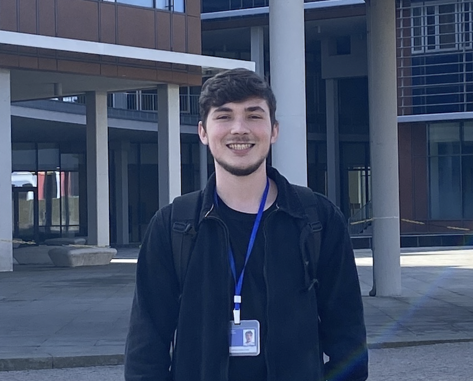

Luiz Roberto Scolari
Software Engineer & Researcher
About Me
Hi! My name is Luiz, and I am an undergraduate student in Computer Science at the Federal University of Santa Catarina (UFSC). I am actively involved in academic research focusing on combinatorial designs, algorithms, and cryptographic applications—areas in which I have a strong passion and interest. Throughout my academic journey, I have participated in various laboratories and projects, including research initiatives, web and mobile development, and other academic activities. I am focused, motivated, and committed to continuous learning and to creating innovative and impactful solutions.
Interests

Experience
Software Developer - Laboratório de Segurança em Computação (LabSEC)
May 2026 - PresentSoftware Developer at LabSEC/UFSC, working on the PBAD project (Brazilian Digital Signature Standard), funded by ITI (National Institute of Information Technology). Development of digital signature generation and verification tools in the context of ICP-Brasil (Brazilian Public Key Infrastructure).
Academic Research - UFSC
April 2024 - April 2026 (2 years 1 month)Engaged in academic research on combinatorics mathematics applied to cryptography. I explore combinatorial designs in group testing, specifically constructions of Cover-Free Families (CFFs), focusing on the construction of polynomials over finite fields and exploring other designs. I generalized and proposed new designs and implemented them efficiently in C, addressing both the theoretical and practical aspects. This research later continued within LabSEC.
Undergraduate Research Fellow - Západočeská univerzita v Plzni (ZČU)
January 2026 - March 2026 (3 months)Academic internship conducted at the University of West Bohemia, where I carried out research in the areas of combinatorial designs and graph theory.
QA Internship - Laboratório Bridge
November 2024 - July 2025 (9 months)Worked as a QA Intern at Laboratório Bridge. In this role, I was responsible for the planning and modeling of test cases, as well as setting up the necessary testing environments. My daily tasks involved executing both automated and exploratory tests, analyzing and correcting execution errors, and reporting found incidents to ensure the reliability and quality of the software products.
PET Computer Science - UFSC
April 2024 - July 2025 (1 year 4 months)Participated in the Tutorial Education Program (PET) at UFSC. During this period, I engaged in various activities focused on the integration of teaching, research, and extension. My responsibilities included providing academic support to fellow students through tutoring focused on course content, developing community-oriented projects, contributing to the development of a web platform for a UFSC sector, and participating in the organization of academic events, such as the Computer Science Academic Week, supporting both technical and organizational activities. This experience strengthened my communication skills, leadership abilities, and commitment to social impact through technology.
Projects
Unbounded-CFFs 🔗
A high-performance C implementation of unbounded Cover-Free Families (CFFs) based on the construction of polynomials over finite fields. This project focuses on implementing both embedding families and monotone families of CFFs. The implementation employs an optimized strategy of pre-calculating polynomial evaluations and storing them in a nested hash map to efficiently build the CFF binary matrix, a technique referred to as inverted indexes. Additionally, a paper has been produced generalizing the construction of the embedding family and detailing this practical implementation.
Publications
Loading publications...
Presentations
Posters:
Practical Implementation of Unbounded Cover-Free Families
17th Latin American Theoretical Informatics Symposium, Florianópolis, Brazil, April 2026.
Embedding Cover-Free Families (CFFs): Implementation and Applications in Cryptography
The 16th International Conference on Finite Fields and their Applications, São Carlos, Brazil, July 2025.